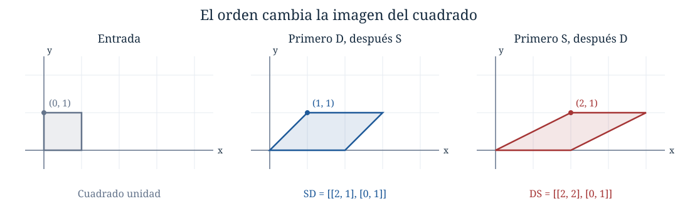
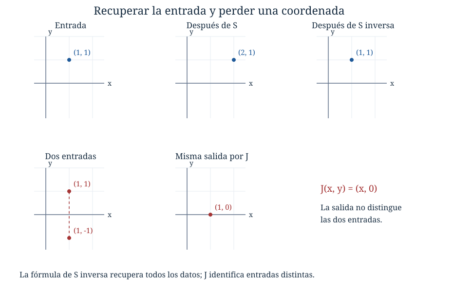
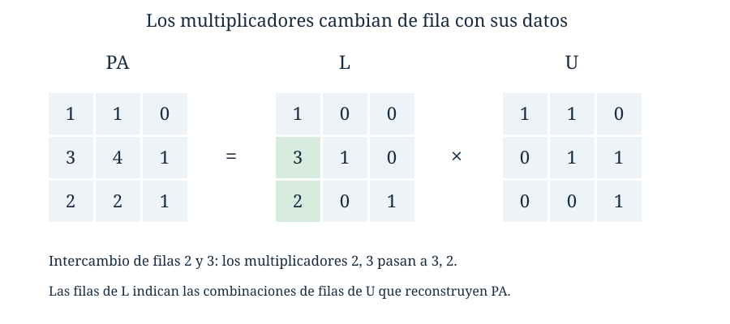

Capítulo 3. Álgebra de matrices e invertibilidad
Álgebra para matemáticos · Tomo II
← Capítulo 2 · Índice del tomo II · Obra completa · Capítulo 4 →
Dos instrumentos reciben las mismas mediciones \(x,y\), pero las procesan en distinto orden. Uno duplica la primera medición y después suma la segunda a la primera; entrega \((2x+y,y)\). El otro suma primero y duplica después; entrega \((2x+2y,y)\). Con el dato \((1,1)\) obtenemos \((3,1)\) y \((4,1)\). Las operaciones utilizadas son las mismas, pero cambiar su orden altera el resultado.
Podemos registrar las dos reglas mediante las matrices
\[ D=\begin{bmatrix}2&0\\0&1\end{bmatrix}, \qquad S=\begin{bmatrix}1&1\\0&1\end{bmatrix}. \]
La regla de \(D\) envía una columna \((x,y)\) a \((2x,y)\); la de \(S\), a \((x+y,y)\). En C02 escribíamos \(Ax=b\) como abreviatura de un sistema. Esa misma lectura por filas permite ahora describir cálculos sucesivos: aplicar una matriz produce una columna que puede servir de entrada a otra. Buscamos una operación entre matrices que registre el cálculo completo y permita, cuando sea posible, deshacerlo.
El cuerpo de escalares será \(\mathbb F\); los ejemplos numéricos y las figuras se calculan sobre \(\mathbb R\), salvo indicación contraria. Los resultados formulados sobre \(\mathbb F\) valen sobre cualquier cuerpo. Mantendremos explícitos los tamaños porque indican qué datos puede recibir y entregar cada operación.
3.1. Sumar tablas y encadenar cálculos
Denotaremos por \(M_{m\times n}(\mathbb F)\) el conjunto de matrices \(m\times n\) sobre \(\mathbb F\), con \(m,n\ge1\). Para matrices del mismo tamaño definimos la suma y el producto por un escalar entrada a entrada:
\[ (A+B)_{ij}=a_{ij}+b_{ij},\qquad (cA)_{ij}=ca_{ij}. \]
La resta es \(A-B=A+(-1)B\). Las leyes de suma, asociatividad, conmutatividad, cero y opuesto se verifican en cada posición mediante las leyes del cuerpo. Por ejemplo, \(((A+B)+C)_{ij}=(a_{ij}+b_{ij})+c_{ij}=a_{ij}+(b_{ij}+c_{ij})\). La igualdad de todas las entradas prueba la igualdad de matrices. Del mismo modo, \(c(A+B)=cA+cB\), \((c+d)A=cA+dA\), \((cd)A=c(dA)\) y \(1A=A\): en la primera identidad, por ejemplo, cada entrada cumple \(c(a_{ij}+b_{ij})=ca_{ij}+cb_{ij}\). No sumamos matrices de tamaños distintos: las posiciones que deberían emparejarse no coinciden.
Para encontrar el producto que registra cálculos sucesivos, tomemos una columna \(x\) con \(p\) entradas. Una matriz \(B\) de tamaño \(n\times p\) produce las cantidades \(y_k=\sum_{j=1}^p b_{kj}x_j\). Una matriz \(A\) de tamaño \(m\times n\) puede recibir esa columna \(y\), y su salida de posición \(i\) será
\[ \sum_{k=1}^n a_{ik}y_k =\sum_{k=1}^n a_{ik}\sum_{j=1}^p b_{kj}x_j =\sum_{j=1}^p\left(\sum_{k=1}^n a_{ik}b_{kj}\right)x_j. \]
Los nuevos coeficientes son las sumas que aparecen entre paréntesis. La fórmula deja de ser una regla arbitraria de filas y columnas: cada término cuenta una contribución que pasa por la posición intermedia \(k\).
Si \(A\in M_{m\times n}(\mathbb F)\) y \(B\in M_{n\times p}(\mathbb F)\), su producto es la matriz \(AB\in M_{m\times p}(\mathbb F)\) dada por
\[ (AB)_{ij}=\sum_{k=1}^n a_{ik}b_{kj}. \]
El número de columnas de \(A\) debe coincidir con el de filas de \(B\). El orden de aplicación a una columna es primero \(B\) y después \(A\), de modo que \((AB)x=A(Bx)\). Se trata por ahora de reglas sobre columnas; su interpretación como transformaciones lineales entre espacios vectoriales se desarrollará después.
Por ejemplo,
\[ \begin{bmatrix}1&2&-1\\0&1&3\end{bmatrix} \begin{bmatrix}2&0\\1&1\\0&-1\end{bmatrix} =\begin{bmatrix}4&3\\1&-2\end{bmatrix}. \]
La entrada \((1,2)\) es \(1\cdot0+2\cdot1+(-1)(-1)=3\). El producto tiene dos filas y dos columnas. El producto en el otro orden también existe, pero tiene tamaño \(3\times3\); no podría ser igual al anterior.
Si \(a_1,\ldots,a_n\) son las columnas de \(A\), la entrada \(i\) de \(Ax\) es \(\sum_j a_{ij}x_j\), por lo que
\[ Ax=x_1a_1+\cdots+x_na_n. \]
Si las columnas de \(B\) son \(b_1,\ldots,b_p\), la fórmula del producto muestra que las de \(AB\) son \(Ab_1,\ldots,Ab_p\). Así, multiplicar por una matriz de varias columnas ejecuta el mismo cálculo para varios datos. Mirando las filas, la fila \(i\) de \(AB\) es la combinación de las filas de \(B\) cuyos coeficientes son las entradas de la fila \(i\) de \(A\).
3.2. Las leyes que conserva el producto
Proposición 3.1. Siempre que los tamaños permitan las operaciones, el producto matricial es asociativo y distributivo:
\[ (AB)C=A(BC),\qquad A(B+C)=AB+AC, \qquad (A+B)C=AC+BC. \]
Para un escalar \(c\), además \(c(AB)=(cA)B=A(cB)\). Si \(A\) es \(m\times n\), entonces \(I_mA=A=AI_n\) y los productos de \(A\) con matrices cero compatibles son cero.
Demostración. Para la asociatividad, sean \(A\) de tamaño \(m\times n\), \(B\) de tamaño \(n\times p\) y \(C\) de tamaño \(p\times q\). Ambos productos tienen tamaño \(m\times q\). Sus entradas se comparan distribuyendo las sumas finitas:
\[ \begin{aligned} ((AB)C)_{ij} &=\sum_{\ell=1}^p\left(\sum_{k=1}^n a_{ik}b_{k\ell}\right)c_{\ell j}\\ &=\sum_{k=1}^n a_{ik}\left(\sum_{\ell=1}^p b_{k\ell}c_{\ell j}\right) =(A(BC))_{ij}. \end{aligned} \]
Cambiar el orden de sumación es válido porque sólo estamos reagrupando una cantidad finita de términos; no se ha intercambiado el orden de las matrices. Para la primera distributividad, la entrada de \(A(B+C)\) es \(\sum_k a_{ik}(b_{kj}+c_{kj})=\sum_k a_{ik}b_{kj}+\sum_k a_{ik}c_{kj}\). Para la segunda se distribuye \(\sum_k(a_{ik}+b_{ik})c_{kj}\) de la misma manera. En ambos casos obtenemos las entradas de la suma anunciada.
Un escalar puede extraerse de cada sumando, lo que prueba las dos identidades con \(c\). La entrada \((i,j)\) de \(I_mA\) es \(\sum_k\delta_{ik}a_{kj}=a_{ij}\), donde \(\delta_{ik}\) vale uno si \(i=k\) y cero en otro caso. Para \(AI_n\), la suma \(\sum_k a_{ik}\delta_{kj}\) también vale \(a_{ij}\). Si uno de los factores es cero, cada sumando del producto es cero. \(\square\)
En el problema inicial,
\[ SD=\begin{bmatrix}2&1\\0&1\end{bmatrix}, \qquad DS=\begin{bmatrix}2&2\\0&1\end{bmatrix}. \]
La primera matriz registra duplicar y luego sumar; la segunda, sumar y luego duplicar. El producto no es conmutativo. Incluso con matrices cuadradas del mismo tamaño, la igualdad \(AB=BA\) es una propiedad que hay que comprobar. Cuando se cumple diremos que \(A\) y \(B\) conmutan.

Tampoco se conserva la regla de que un producto cero obliga a anular un factor. La matriz
\[ N=\begin{bmatrix}0&1\\0&0\end{bmatrix} \]
es no nula y satisface \(N^2=0\). Aplicada a \((x,y)\) entrega \((y,0)\); aplicada por segunda vez entrega \((0,0)\). Por eso tampoco podemos cancelar un factor matricial no nulo como si fuera un escalar no nulo: \(NN=N0\) y, sin embargo, \(N\ne0\).
Para una matriz cuadrada definimos \(A^0=I_n\) y \(A^{r+1}=A^rA\). La asociatividad asegura que \(A^{r+s}=A^rA^s\) para enteros no negativos: se demuestra por inducción en \(s\), comenzando por la identidad. Otra inducción da \((A^r)^s=A^{rs}\). Al desarrollar \((A+B)^2\) obtenemos \(A^2+AB+BA+B^2\); sólo si \(A,B\) conmutan podemos reunir los términos centrales en \(2AB\).
3.3. Transpuesta y escritura por bloques
La transpuesta de \(A\in M_{m\times n}(\mathbb F)\) es la matriz \(A^{\mathsf T}\in M_{n\times m}(\mathbb F)\) con \((A^{\mathsf T})_{ij}=a_{ji}\). Intercambia filas y columnas sin cambiar las entradas. Sobre \(\mathbb C\) tampoco conjuga los números: transponer y conjugar son operaciones distintas.
Proposición 3.2. Se cumple \((A^{\mathsf T})^{\mathsf T}=A\), \((A+B)^{\mathsf T}=A^{\mathsf T}+B^{\mathsf T}\), \((cA)^{\mathsf T}=cA^{\mathsf T}\) y
\[ (AB)^{\mathsf T}=B^{\mathsf T}A^{\mathsf T}. \]
Demostración. Las tres primeras igualdades se obtienen leyendo en posición \((i,j)\) las entradas \(a_{ij}\), \(a_{ji}+b_{ji}\) y \(ca_{ji}\). Para la última, ambos miembros tienen tamaño \(p\times m\) si \(A\) es \(m\times n\) y \(B\) es \(n\times p\). Su entrada \((i,j)\) es, respectivamente,
\[ \sum_{k=1}^n a_{jk}b_{ki} \quad\text{y}\quad \sum_{k=1}^n (B^{\mathsf T})_{ik}(A^{\mathsf T})_{kj} =\sum_{k=1}^n b_{ki}a_{jk}. \]
Coinciden porque los escalares del cuerpo conmutan. \(\square\)
Podemos dividir una matriz en rectángulos menores para conservar a la vista una organización del problema. En una escritura como
\[ A=\begin{bmatrix}A_{11}&A_{12}\\A_{21}&A_{22}\end{bmatrix}, \]
cada símbolo representa una matriz, llamada bloque. Si las alturas de las dos franjas son \(r,s\) y las anchuras son \(u,v\), los tamaños de los bloques son \(r\times u\), \(r\times v\), \(s\times u\) y \(s\times v\). Esas condiciones son necesarias incluso para que la tabla completa exista.
Proposición 3.3. Si las particiones interiores coinciden, el producto por bloques obedece la misma regla de filas y columnas:
\[ \begin{bmatrix}A&B\\C&D\end{bmatrix} \begin{bmatrix}E&F\\G&H\end{bmatrix} =\begin{bmatrix}AE+BG&AF+BH\\CE+DG&CF+DH\end{bmatrix}. \]
Demostración. En cada entrada del producto ordinario, dividimos la suma sobre el índice intermedio en los dos intervalos que determina la partición. Para una entrada del bloque superior izquierdo, la primera suma es la entrada correspondiente de \(AE\) y la segunda, la de \(BG\). El mismo razonamiento en las otras franjas produce los otros tres bloques. La coincidencia de las particiones garantiza que todos los productos y sumas tienen los tamaños necesarios. \(\square\)
El orden de los factores sigue siendo obligatorio. Por ejemplo, si \(B\) es \(r\times s\),
\[ \begin{bmatrix}I_r&B\\0&I_s\end{bmatrix} \begin{bmatrix}I_r&-B\\0&I_s\end{bmatrix} =I_{r+s}, \]
y el producto en el otro orden también es la identidad. Los bloques cero tienen aquí los tamaños que impone la tabla. Esta cancelación será un primer ejemplo de cómo deshacer una operación completa conservando el orden de sus partes.
3.4. Las operaciones elementales como productos
Una matriz elemental de tamaño \(m\times m\) es la que se obtiene aplicando una operación elemental por filas a \(I_m\).
Proposición 3.4. Si \(E\) se obtiene de \(I_m\) mediante una operación elemental, \(EA\) ejecuta esa misma operación sobre cualquier matriz \(A\) de \(m\) filas. Si \(E_1,\ldots,E_k\) corresponden a operaciones ejecutadas en ese orden, su efecto conjunto es \(E_k\cdots E_1A\).
Demostración. La fila \(i\) de un producto es la combinación de filas del factor derecho indicada por la fila \(i\) del izquierdo. Al intercambiar filas \(r,s\) de \(I_m\), la fila \(r\) del producto selecciona la fila \(s\) de \(A\), la fila \(s\) selecciona la fila \(r\) y las demás seleccionan su propia fila. Si multiplicamos la fila \(r\) de \(I_m\) por \(c\ne0\), el producto selecciona \(c\) veces la fila \(r\) de \(A\) y deja las restantes intactas.
Para \(F_r\leftarrow F_r+cF_s\), con \(r\ne s\), la fila \(r\) de \(E\) tiene uno en la posición \(r\), \(c\) en la posición \(s\) y ceros en las demás. Selecciona exactamente \(f_r+cf_s\); cada otra fila sigue seleccionando su propia fila de \(A\). Esto prueba los tres casos. Al aplicar primero \(E_1\), después \(E_2\) y así sucesivamente, la asociatividad da \(E_k\cdots E_1A\). \(\square\)
En particular, la instrucción \(F_2\leftarrow F_2-3F_1\) en tres filas está representada por
\[ E=\begin{bmatrix}1&0&0\\-3&1&0\\0&0&1\end{bmatrix}. \]
La entrada \(-3\) está en la posición \((2,1)\): la fila que cambia se escribe primero, la que se utiliza después. Multiplicar por la derecha tiene otra interpretación. Si \(Q\) se obtiene de \(I_n\) mediante una operación sobre sus columnas, \(AQ\) realiza esa operación sobre las columnas de \(A\), como se comprueba leyendo cada columna del producto. En particular, el mismo \(E\) del ejemplo, usado a la derecha de una matriz de tres columnas, reemplaza su primera columna por la primera menos tres veces la segunda. No ejecuta una operación sobre la segunda fila.
La matriz que registra toda una reducción puede calcularse sin multiplicar separadamente sus factores. Transportamos \(I_m\) junto a \(A\):
\[ [A\,|\,I_m]\longrightarrow[R\,|\,P]. \]
Si ambas franjas recibieron las mismas operaciones, \(P=E_k\cdots E_1\) y \(PA=R\). Las filas de \(P\) son las listas de multiplicadores que expresan las filas de \(R\) mediante las originales. Así se recupera en una sola tabla el seguimiento de certificados de C01. Cuando una fila de \(R\) es cero pero la fila correspondiente de \(Pb\) vale uno, esa fila de \(P\) es un certificado de incompatibilidad para \(Ax=b\).
3.5. Deshacer una matriz
Una matriz cuadrada \(A\in M_{n\times n}(\mathbb F)\) es invertible si existe \(B\) del mismo tamaño con \(AB=BA=I_n\). Esa matriz es su inversa y se denota \(A^{-1}\). Una matriz cuadrada que no es invertible se llama singular.
La inversa, si existe, es única. Si \(B,C\) fueran dos inversas, entonces \(B=B(AC)=(BA)C=C\). La prueba utiliza el orden de los factores, la asociatividad y las dos identidades de inversa; no cancela una matriz cuya invertibilidad aún no se conozca.
Para \(S\) del comienzo, la inversa es \(\begin{bmatrix}1&-1\\0&1\end{bmatrix}\): después de obtener \((x+y,y)\) podemos restar la segunda coordenada de la primera y recuperar \((x,y)\). La matriz \(J=\begin{bmatrix}1&0\\0&0\end{bmatrix}\), en cambio, envía todos los pares \((x,y)\) a \((x,0)\). Ha perdido la segunda coordenada. Si tuviera inversa, \(J(1,0)=J(1,1)\) permitiría recuperar simultáneamente dos entradas distintas desde la misma salida, lo cual es imposible.

Proposición 3.5. Si \(A,B\) son invertibles del mismo tamaño y \(c\ne0\), entonces
\[ (AB)^{-1}=B^{-1}A^{-1},\qquad (A^{-1})^{-1}=A,\qquad (cA)^{-1}=c^{-1}A^{-1},\qquad (A^{\mathsf T})^{-1}=(A^{-1})^{\mathsf T}. \]
Demostración. Multiplicamos \(AB\) por la candidata en ambos órdenes:
\[ (AB)(B^{-1}A^{-1})=A(BB^{-1})A^{-1}=I, \qquad (B^{-1}A^{-1})(AB)=B^{-1}(A^{-1}A)B=I. \]
Para la segunda identidad, las igualdades que definen la inversa son simétricas en \(A,A^{-1}\). Para la tercera, \((cA)(c^{-1}A^{-1})=I\) y \((c^{-1}A^{-1})(cA)=I\) por las leyes con escalares. Finalmente, transponer \(A^{-1}A=I\) y \(AA^{-1}=I\) da \(A^{\mathsf T}(A^{-1})^{\mathsf T}=I\) y \((A^{-1})^{\mathsf T}A^{\mathsf T}=I\). En cada caso, unicidad identifica la inversa. \(\square\)
Una matriz elemental es invertible: la operación elemental inversa produce una matriz \(E'\) con \(E'E=EE'=I\), por la proposición 3.4 aplicada a \(I_m\). Para el intercambio se repite el intercambio; para el escalado por \(c\) se usa \(c^{-1}\); para sumar \(c\) veces otra fila se suma \(-c\) veces esa fila. La inversa también es elemental.
Para una matriz invertible definimos \(A^{-r}=(A^{-1})^r\), \(r\ge1\). Las potencias de una misma matriz siguen cumpliendo \(A^{r+s}=A^rA^s\) para enteros cualesquiera: la asociatividad permite reunir factores y cancelar cada pareja \(AA^{-1}\) o \(A^{-1}A\). Esto no da permiso para reunir potencias de matrices diferentes sin comprobar que conmutan.
3.6. Los criterios de invertibilidad y el caso rectangular
Teorema 3.6. Para \(A\in M_{n\times n}(\mathbb F)\) son equivalentes:
- \(A\) es invertible;
- \(\operatorname{rg}(A)=n\);
- \(\operatorname{rref}(A)=I_n\);
- \(Ax=0\) tiene sólo la solución cero;
- para todo \(b\in\mathbb F^n\), el sistema \(Ax=b\) tiene solución;
- para todo \(b\in\mathbb F^n\), el sistema \(Ax=b\) tiene exactamente una solución;
- \(A\) es producto de matrices elementales, admitiendo el producto vacío \(I_n\).
Demostración. Si \(A\) es invertible, la columna \(A^{-1}b\) satisface \(Ax=b\) y cualquier solución cumple \(x=A^{-1}Ax=A^{-1}b\). Esto da la condición 6. El teorema 2.8 y la lectura del homogéneo en C02 prueban que las condiciones 2,4,5,6 son equivalentes, porque el número de filas y el de columnas son ambos \(n\).
Una matriz reducida \(n\times n\) con \(n\) pivotes debe tener uno en cada fila y columna, con el orden impuesto por el escalonamiento. Es \(I_n\). Recíprocamente, esa forma reducida tiene rango \(n\), así que 2 y 3 son equivalentes.
Si se cumple 3, una reducción proporciona \(E_k\cdots E_1A=I_n\). El producto \(P=E_k\cdots E_1\) es invertible porque cada factor lo es y la proposición 3.5 permite invertir sucesivamente productos. Multiplicar por \(P^{-1}\) da \(A=P^{-1}\), que es invertible y, además, producto de matrices elementales inversas. Esto prueba 1 y 7 desde 3. Finalmente, 7 implica 1 porque un producto de matrices elementales es invertible. Todas las condiciones quedan conectadas. \(\square\)
No intervino ningún determinante. La equivalencia entre existencia y unicidad para todos los datos procede del hecho de tener el mismo número finito de filas y columnas.
Corolario 3.7. Para matrices cuadradas \(A,B\) del mismo tamaño, basta una de las igualdades \(BA=I_n\) o \(AB=I_n\) para concluir que ambas son inversas.
Demostración. Si \(BA=I_n\) y \(Ax=0\), entonces \(x=BAx=0\). El teorema 3.6 hace invertible a \(A\); multiplicar \(BA=I_n\) por \(A^{-1}\) a la derecha da \(B=A^{-1}\). Si \(AB=I_n\), aplicamos el razonamiento anterior a \(B\), que tiene a \(A\) como inversa por la izquierda. \(\square\)
Las identidades laterales también tienen sentido para matrices rectangulares, pero pueden separar propiedades distintas. Para \(A\) de tamaño \(m\times n\), una inversa por la izquierda es una matriz \(L\) de tamaño \(n\times m\) con \(LA=I_n\), y una inversa por la derecha es una matriz \(R\) del mismo tamaño con \(AR=I_m\).
Teorema 3.8. Una matriz \(A\in M_{m\times n}(\mathbb F)\) admite inversa por la izquierda si y sólo si tiene rango \(n\), y admite inversa por la derecha si y sólo si tiene rango \(m\).
Demostración. Si \(LA=I_n\), toda solución de \(Ax=0\) satisface \(x=LAx=0\); por C02, el rango es \(n\). Para la vuelta, reduzcamos \(A\) por filas y escribamos \(EA=\begin{bmatrix}I_n\\0\end{bmatrix}\), forma que debe tener una reducida de rango \(n\). Aquí \(m\ge n\) y \(E\) es una matriz invertible de tamaño \(m\). La matriz \(Q=[I_n\ 0]\), de tamaño \(n\times m\), selecciona las primeras \(n\) filas; si \(m=n\), se omiten los bloques cero y \(Q=I_n\). Entonces \(QEA=I_n\), de modo que \(QE\) es una inversa por la izquierda.
Si \(AR=I_m\), para cada \(b\) la columna \(Rb\) resuelve \(Ax=b\) y, por el teorema 2.8, el rango es \(m\). Recíprocamente, si el rango es \(m\), resolvemos \(Ar_j=e_j\) para cada una de las \(m\) columnas de \(I_m\). Al reunir las soluciones en \(R=[r_1\ \cdots\ r_m]\), la lectura por columnas da \(AR=I_m\). \(\square\)
Por ejemplo, \(A=[1\ 0]\) y \(R=\begin{bmatrix}1\\0\end{bmatrix}\) satisfacen \(AR=I_1\), pero \(RA=\begin{bmatrix}1&0\\0&0\end{bmatrix}\ne I_2\). La regla \(R\) escoge una entrada para cada salida de \(A\); no recupera todas las entradas posibles que se habían enviado a esa salida. El caso rectangular impide transferir el corolario 3.7 sin su hipótesis de tamaño cuadrado.
3.7. Calcular una inversa y leer sus columnas
Proposición 3.9. Si una sucesión de operaciones por filas transforma \([A\,|\,I_n]\) en \([I_n\,|\,B]\), entonces \(B=A^{-1}\). Tal sucesión existe si y sólo si \(A\) es invertible.
Demostración. La matriz que registra la sucesión multiplica a ambos bloques por la izquierda. El bloque derecho final es esa matriz \(B\) y el izquierdo es \(BA\), así que \(BA=I_n\). El corolario 3.7 da \(B=A^{-1}\). Si \(A\) es invertible, el teorema 3.6 garantiza una reducción de \(A\) a \(I_n\), y podemos transportar el bloque derecho con las mismas operaciones. \(\square\)
Para \(A=\begin{bmatrix}1&2\\2&5\end{bmatrix}\), la reducción es
\[ \left[\begin{array}{rr|rr}1&2&1&0\\2&5&0&1\end{array}\right] \longrightarrow \left[\begin{array}{rr|rr}1&2&1&0\\0&1&-2&1\end{array}\right] \longrightarrow \left[\begin{array}{rr|rr}1&0&5&-2\\0&1&-2&1\end{array}\right]. \]
Se ejecutan \(F_2\leftarrow F_2-2F_1\) y \(F_1\leftarrow F_1-2F_2\). Por tanto, \(A^{-1}=\begin{bmatrix}5&-2\\-2&1\end{bmatrix}\). La multiplicación directa en ambos órdenes da \(I_2\). Para datos \((b_1,b_2)\), la solución única es \((5b_1-2b_2,-2b_1+b_2)\).
Cada columna de \(A^{-1}\) es la solución de un problema concreto: \(Ax=e_j\). Calcular la inversa reúne esos \(n\) problemas en una sola reducción. Si sólo se necesita resolver un sistema, podemos transportar su única columna \(b\) y sustituir regresivamente; no es necesario calcular todas las columnas de la inversa.
Si al reducir el bloque de coeficientes no llegamos a \(I_n\), el teorema 3.6 certifica que no hay inversa. No debemos interpretar sin más el bloque derecho obtenido como \(A^{-1}\). Las operaciones pueden seguir siendo reversibles sobre las filas aunque la regla \(x\mapsto Ax\) haya perdido información sobre las columnas de entrada.
3.8. Conservar la eliminación en factores triangulares
Una matriz cuadrada es triangular superior si \(a_{ij}=0\) para \(i>j\) y triangular inferior si \(a_{ij}=0\) para \(i<j\). Diremos que tiene diagonal de unos si \(a_{ii}=1\) para todo \(i\).
Proposición 3.10. Una matriz triangular es invertible si y sólo si todos sus elementos diagonales son no nulos. Su inversa tiene la misma orientación triangular. El producto de dos matrices triangulares de la misma orientación sigue siendo triangular y su diagonal es el producto entrada a entrada de las diagonales.
Demostración. Para una triangular superior con diagonal no nula, la sustitución regresiva resuelve \(Tx=b\) de forma única para todo \(b\); el teorema 3.6 da invertibilidad. Si aparece un cero diagonal, sea \(k\) la primera posición donde ocurre. En el homogéneo fijamos \(x_k=1\) y \(x_j=0\) para \(j>k\). Las filas desde \(k\) hacia abajo ya se satisfacen. Las anteriores tienen pivotes diagonales no nulos, y por sustitución regresiva determinan \(x_{k-1},\ldots,x_1\). Se obtiene una solución no nula, por lo que \(T\) es singular. Para una triangular inferior se aplica el resultado a su transpuesta, usando la proposición 3.5.
La columna \(j\) de la inversa superior resuelve \(Tx=e_j\). Desde la última fila hasta la fila \(j+1\), el segundo miembro es cero y la sustitución obliga a \(x_i=0\) para \(i>j\). Es precisamente la condición de triangularidad superior de \(T^{-1}\). Para la inferior se razona desde arriba o se transpone.
Si \(L,M\) son inferiores, una contribución no nula a \((LM)_{ij}\) exige \(j\le k\le i\). Para \(i<j\) no hay tal \(k\), y para \(i=j\) sólo contribuye \(k=i\); quedan triangularidad y la fórmula diagonal. Para matrices superiores el intervalo se invierte y el argumento es igual. \(\square\)
En particular, la inversa de una triangular inferior con diagonal de unos vuelve a tener diagonal de unos. La forma triangular permite deshacer la matriz respetando un orden conocido de incógnitas.
Una factorización LU escribe \(A=LU\), con \(L\) triangular inferior con diagonal de unos y \(U\) triangular superior. La eliminación hacia delante puede construirla mientras guarda sus propios multiplicadores.
Teorema 3.11. Supongamos que una matriz cuadrada se reduce a una triangular superior \(U\) utilizando sólo las instrucciones \(F_i\leftarrow F_i-\ell_{ij}F_j\) con \(i>j\), en orden de columnas \(j=1,\ldots,n-1\), sin intercambios ni escalados. Entonces \(A=LU\), donde \(L\) tiene diagonal de unos y las entradas inferiores \(\ell_{ij}\) utilizadas, tomando cero si no hizo falta esa anulación.
Demostración. La fila pivote \(j\) ya es su fila final \(u_j\) cuando se usa para modificar filas inferiores: ninguna instrucción posterior la cambia. La fila \(i\) de \(A\) pierde sucesivamente \(\ell_{i1}u_1,\ldots,\ell_{i,i-1}u_{i-1}\) y queda convertida en \(u_i\). Por ello su fila original satisface \(a_i=u_i+\sum_{j<i}\ell_{ij}u_j\). Estas son exactamente las filas del producto \(LU\), por la lectura de un producto como combinaciones de filas. \(\square\)
Por ejemplo,
\[ A=\begin{bmatrix}2&1&1\\4&3&3\\2&2&3\end{bmatrix} =\underbrace{\begin{bmatrix}1&0&0\\2&1&0\\1&1&1\end{bmatrix}}_{L} \underbrace{\begin{bmatrix}2&1&1\\0&1&1\\0&0&1\end{bmatrix}}_{U}. \]
Los multiplicadores son \(\ell_{21}=2\), \(\ell_{31}=1\) y \(\ell_{32}=1\). Se obtienen al restar dos veces la primera fila de la segunda, una vez la primera de la tercera y, después, la segunda actual de la tercera. En \(L\) se registran los números que se restaron, con su signo en la expresión \(F_i-\ell_{ij}F_j\); no se copian cambiados de signo los coeficientes de esa instrucción.
Para resolver \(Ax=b\), primero resolvemos \(Ly=b\) hacia delante y después \(Ux=y\) hacia atrás. Con \(b=(4,10,9)\), la primera etapa da \(y=(4,2,3)\) y la segunda \(x=(1,-1,3)\). Con otro dato se reutilizan los mismos factores: para \(b=(1,3,1)\) se obtiene \(y=(1,1,-1)\) y \(x=(0,2,-1)\). Las dos etapas son equivalentes a \(LUx=b\) porque \(L\) es invertible; cada sustitución tiene una solución única en este ejemplo.
3.9. Cuando hace falta intercambiar filas
La matriz \(\begin{bmatrix}0&1\\1&0\end{bmatrix}\) es invertible y no admite una factorización \(LU\) de la clase anterior. Si \(L=\begin{bmatrix}1&0\\\ell&1\end{bmatrix}\) y \(U=\begin{bmatrix}u&v\\0&w\end{bmatrix}\), la entrada \((1,1)\) del producto fuerza \(u=0\), y la entrada \((2,1)\) sería entonces \(\ell u=0\), cuando debería ser uno. La eliminación necesita un intercambio antes de poder usar la primera columna.
Una matriz de permutación es una matriz obtenida al reordenar las filas de \(I_n\). Contiene exactamente un uno en cada fila y columna y ceros en las demás. Multiplicar por ella a la izquierda reordena las filas del otro factor. Su transpuesta deshace la reordenación: en el producto \(P^{\mathsf T}P\) las entradas comparan columnas distintas de \(I_n\) y dan cero, salvo al comparar cada columna consigo misma, que da uno. También \(PP^{\mathsf T}=I_n\), por lo que \(P^{-1}=P^{\mathsf T}\).
Para conservar esa reordenación escribiremos \(PA=LU\). Ésta es nuestra convención: se permutan primero las filas de \(A\), y \(L\) tiene diagonal de unos. Equivale a \(A=P^{\mathsf T}LU\); la matriz que aparece delante de \(L\) en esa segunda escritura es la permutación inversa.
Teorema 3.12. Para toda matriz cuadrada invertible \(A\) sobre un cuerpo existen una matriz de permutación \(P\), una triangular inferior \(L\) con diagonal de unos y una triangular superior invertible \(U\) tales que \(PA=LU\).
Demostración. Procedemos por inducción en el tamaño. Para \(n=1\), tomamos \(P=L=[1]\) y \(U=A\), cuya entrada es no nula. Supongamos establecido el resultado para tamaño \(n-1\). La primera columna de una matriz invertible no puede ser cero, porque en ese caso \(Ae_1=0\). Un intercambio, si hace falta, sitúa una entrada no nula \(a\) en la primera posición. Denotando ese intercambio por \(P_1\), escribimos por bloques
\[ P_1A=\begin{bmatrix}a&r\\c&D\end{bmatrix} =\begin{bmatrix}1&0\\c/a&I\end{bmatrix} \begin{bmatrix}a&r\\0&D-(c/a)r\end{bmatrix}. \]
Aquí \(r\) es una fila, \(c\) una columna y \(D\) una matriz de tamaño \(n-1\). La fórmula se verifica multiplicando los bloques. Sea \(H=D-(c/a)r\). Si \(Hy=0\), la columna que tiene primera entrada \(-ry/a\) y bloque restante \(y\) resuelve el homogéneo de \(P_1A\). Como \(P_1A\) es invertible, esa columna es cero y, en particular, \(y=0\). El teorema 3.6 asegura que \(H\) es invertible.
La hipótesis inductiva proporciona \(P_2H=L_2U_2\). Multiplicando la tabla anterior por la permutación de bloques \(\operatorname{diag}(1,P_2)\) obtenemos la identidad
\[ \begin{bmatrix}1&0\\0&P_2\end{bmatrix}P_1A =\begin{bmatrix}1&0\\P_2c/a&L_2\end{bmatrix} \begin{bmatrix}a&r\\0&U_2\end{bmatrix}. \]
El factor izquierdo que multiplica a \(A\) es una permutación \(P\); el primer factor derecho es inferior con diagonal de unos y el segundo es superior con diagonal no nula. La proposición 3.10 hace invertible a este último. Esto construye los tres factores y cierra la inducción. \(\square\)
La expresión \(P_2c/a\) explica un detalle del cálculo: los intercambios que ocurren después de una etapa también deben reordenar los multiplicadores que esa etapa ya había guardado. Consideremos
\[ A=\begin{bmatrix}1&1&0\\2&2&1\\3&4&1\end{bmatrix}. \]
Restar \(2F_1\) de \(F_2\) y \(3F_1\) de \(F_3\) deja las filas inferiores \((0,0,1)\) y \((0,1,1)\). Debemos intercambiarlas para continuar con pivote en la segunda columna. Los multiplicadores \(2,3\) de la primera etapa cambian de orden junto con esas filas. Resulta
\[ P=\begin{bmatrix}1&0&0\\0&0&1\\0&1&0\end{bmatrix}, \quad L=\begin{bmatrix}1&0&0\\3&1&0\\2&0&1\end{bmatrix}, \quad U=\begin{bmatrix}1&1&0\\0&1&1\\0&0&1\end{bmatrix}, \qquad PA=LU. \]

Una vez calculados los factores de una matriz invertible, el sistema \(Ax=b\) se resuelve mediante \(Ly=Pb\) y \(Ux=y\). La columna de datos debe recibir la misma permutación que los coeficientes. Este procedimiento reutiliza la eliminación para datos sucesivos; no necesita formar la inversa completa ni promete por sí solo controlar los errores de redondeo de una implementación numérica.
3.10. Ejercicios
Trabajar sobre \(\mathbb R\) salvo indicación contraria. Comprobar los tamaños antes de operar y justificar las afirmaciones sobre existencia, unicidad e invertibilidad sin determinantes.
Operaciones y orden de composición
1. Para \(A=\begin{bmatrix}1&-2\\0&3\end{bmatrix}\) y \(B=\begin{bmatrix}2&1\\-1&0\end{bmatrix}\), calcular \(2A-B\) y \(A+B\). Resolver \(X+B=2A\) y explicar por qué la solución es única.
2. Sean \(A\) de tamaño \(2\times3\), \(B\) de tamaño \(3\times4\) y \(C\) de tamaño \(4\times2\). Indicar cuáles de \(AB,BA,BC,CB,ABC,CAB\) existen y sus tamaños.
3. Para las matrices rectangulares de §3.1, calcular el producto en el orden inverso. Verificar la entrada \((3,2)\) mediante la regla de composición.
4. Para \(S,D\) del comienzo, calcular \(SDx\) y \(DSx\) con \(x=(u,v)\). Determinar exactamente qué entradas dan la misma salida en ambos órdenes.
5. Calcular \(N^r\) para todo entero \(r\ge1\), donde \(N=\begin{bmatrix}0&1\\0&0\end{bmatrix}\). Construir dos matrices no nulas distintas \(B,C\) con \(NB=NC\).
6. Para \(A\in M_{m\times n}(\mathbb F)\), probar directamente que \(Ae_j\) es su columna \(j\). Deducir que si \(Ax=Bx\) para todas las columnas \(x\in\mathbb F^n\), entonces \(A=B\).
7. Calcular las dos transpuestas de \(A=\begin{bmatrix}1&i&2\\0&-i&1\end{bmatrix}\) y verificar \((A^{\mathsf T})^{\mathsf T}=A\). ¿Se ha cambiado \(i\) por \(-i\) al transponer?
8. Para \(S,D\), calcular \((SD)^{\mathsf T}\) y \(S^{\mathsf T}D^{\mathsf T}\). Localizar el error en la afirmación \((AB)^{\mathsf T}=A^{\mathsf T}B^{\mathsf T}\).
9. Si \(A\) es \(2\times2\) y \(B\) es \(2\times3\), decidir si las escrituras \(\begin{bmatrix}A&B\\B&A\end{bmatrix}\) y \(\begin{bmatrix}A&B\\0&I_3\end{bmatrix}\) son particiones rectangulares por bloques con cortes comunes de filas y columnas. Dar los tamaños necesarios del bloque cero en la segunda.
10. Si \(B\) es \(r\times s\), calcular \(\begin{bmatrix}I_r&B\\0&I_s\end{bmatrix}^k\) para enteros \(k\ge0\). Probar la fórmula por inducción.
Matrices elementales e inversas
11. Escribir las matrices elementales de tamaño tres para \(F_1\leftrightarrow F_3\), \(F_2\leftarrow-2F_2\) y \(F_3\leftarrow F_3+4F_1\). Dar sus inversas y verificar una de ellas por producto.
12. Sea \(E=\begin{bmatrix}1&-2\\0&1\end{bmatrix}\) y \(A=\begin{bmatrix}1&3\\2&4\end{bmatrix}\). Calcular \(EA,AE\) e interpretar las dos operaciones.
13. La matriz \(A=\begin{bmatrix}1&2\\2&5\end{bmatrix}\) se reduce como en §3.7. Escribir \(E_1,E_2\), comprobar \(E_2E_1=A^{-1}\) y expresar \(A\) como producto de matrices elementales.
14. Calcular por operaciones sobre \([A\,|\,I]\) la inversa de \(A=\begin{bmatrix}2&1\\1&1\end{bmatrix}\). Resolver con ella \(Ax=(3,2)\).
15. Mostrar que \(A=\begin{bmatrix}1&2\\2&4\end{bmatrix}\) es singular mediante una columna no nula \(x\) con \(Ax=0\). Explicar por qué ninguna elección del bloque derecho al reducir puede crear una inversa.
16. Si \(A,B\) son invertibles, resolver \(AXB=C\) para \(X\) y verificar la solución. Indicar los tamaños cuando \(A\) es \(m\times m\), \(B\) es \(n\times n\) y \(C\) es \(m\times n\).
17. Para \(S,D\), comparar \((SD)^{-1}\) con \(S^{-1}D^{-1}\). Comprobar cuál de las dos expresiones \(S^{-1}D^{-1}\) y \(D^{-1}S^{-1}\) deshace \(SD\).
18. Sean \(A,B,C\) matrices de tamaños compatibles. Probar que \(AB=AC\) permite concluir \(B=C\) si \(A\) es cuadrada e invertible. Dar un contraejemplo con \(A\) no nula y singular. Formular también la cancelación por la derecha.
19. Para \(A_t=\begin{bmatrix}1&t\\t&1\end{bmatrix}\), determinar los valores reales de \(t\) para los que existe inversa y calcularla. Tratar por separado los valores excepcionales usando el homogéneo.
20. Si \(N^k=0\) para alguna matriz cuadrada \(N\) y algún entero \(k\ge1\), probar que \(I-N\) es invertible y dar su inversa como suma finita. No suponer que una serie infinita converge.
Criterios y casos rectangulares
21. Para \(A=\begin{bmatrix}1&0&1\\0&1&1\end{bmatrix}\), hallar todas las matrices \(R\) con \(AR=I_2\). Probar que ninguna satisface además \(RA=I_3\).
22. Para \(B=\begin{bmatrix}1&0\\0&1\\1&1\end{bmatrix}\), hallar todas las matrices \(L\) con \(LB=I_2\). Explicar por qué \(BL=I_3\) es imposible.
23. Si una matriz rectangular tiene inversa por ambos lados, probar que necesariamente es cuadrada y que las dos inversas coinciden. Usar los criterios de rango de este capítulo.
24. Para matrices cuadradas \(A,B\), probar que si \(AB\) es invertible, también lo son \(A\) y \(B\). Producir un ejemplo rectangular donde \(AB\) sea una identidad y \(BA\) no lo sea.
25. Probar que matrices del mismo tamaño \(A,B\) son equivalentes por filas si y sólo si \(B=PA\) para alguna matriz cuadrada invertible \(P\). Relacionar el resultado con la proposición 2.6a.
26. Reducir \([A\,|\,I_3]\) hasta que su bloque izquierdo esté reducido para \(A=\begin{bmatrix}1&0\\0&1\\1&1\end{bmatrix}\). Leer en el bloque derecho un certificado para los sistemas incompatibles \(Ax=b\) y obtener la condición sobre \(b\).
27. Probar que una matriz cuadrada con entradas en un subcuerpo \(\mathbb K\subseteq\mathbb F\) es invertible sobre \(\mathbb F\) si y sólo si lo es sobre \(\mathbb K\), y que su inversa tiene entradas en \(\mathbb K\).
28. Interpretar \(A=\begin{bmatrix}1&1\\1&-1\end{bmatrix}\) sobre \(\mathbb Q\) y sobre \(\mathbb F_2\). Determinar la invertibilidad en cada caso y explicar por qué esto no contradice el ejercicio 27.
Bloques, triangulares y factorización
29. Hallar la inversa de \(T=\begin{bmatrix}1&2&3\\0&1&4\\0&0&1\end{bmatrix}\) por sustitución. Verificar que \(T^{-1}\) es superior, y comprobar que tomar los opuestos de todas las entradas sobre la diagonal no da la inversa correcta.
30. Si \(A,D\) son cuadradas e invertibles y \(B\) tiene el tamaño apropiado, hallar y verificar la inversa de \(\begin{bmatrix}A&B\\0&D\end{bmatrix}\). Mantener el orden de cada producto.
31. Calcular una factorización \(LU\) con diagonal de unos en \(L\) para \(A=\begin{bmatrix}1&2&1\\2&5&3\\3&8&6\end{bmatrix}\). Registrar los multiplicadores y comprobar el producto.
32. Usar los factores del ejercicio 31 para resolver \(Ax=(2,5,9)\) y \(Ax=(4,9,14)\) sin calcular la inversa.
33. Encontrar \(P,L,U\) con \(PA=LU\) para \(A=\begin{bmatrix}0&2\\1&3\end{bmatrix}\). Resolver \(Ax=(4,7)\) y mostrar dónde se permuta el dato.
34. En el último ejemplo de §3.9, sustituir por error la primera columna inferior de \(L\) por \((2,3)\) en lugar de \((3,2)\). Calcular el producto obtenido y explicar qué información se dejó de permutar.
35. Probar que un producto de matrices de permutación vuelve a ser una matriz de permutación. Para \(P=\begin{bmatrix}0&1&0\\0&0&1\\1&0&0\end{bmatrix}\), calcular \(P^{-1}\) y decidir si \(P=P^{-1}\).
36. ¿Toda matriz triangular superior es escalonada? Dar un contraejemplo \(2\times2\) y explicar por qué, pese a ello, admite una factorización \(LU\) con diagonal de unos en \(L\).
Pruebas estructurales y transferencia
37. Para \(H_t=\begin{bmatrix}1&t\\0&1\end{bmatrix}\) sobre un cuerpo, probar \(H_sH_t=H_{s+t}\) y \(H_t^{-1}=H_{-t}\). Determinar \(H_1^p\) sobre \(\mathbb F_p\), el cuerpo de residuos módulo el primo \(p\).
38. Un sistema cuadrado satisface \(Ax=b\) y se modifica a \(A(x+u)=b+Au\). Probar que las soluciones del nuevo problema son exactamente las del anterior. Explicar por qué no hace falta que \(A\) sea invertible y por qué «cancelar \(A\)» no sería una justificación general válida.
39. Dos matrices cuadradas invertibles \(A,B\) conmutan. Probar que \(A^{-1}B=BA^{-1}\) y que \((AB)^r=A^rB^r\) para enteros \(r\ge0\). Identificar en la inducción el paso que necesita conmutatividad.
40. Sea \(A\) invertible y \(P\) una permutación fija. Probar que si \(PA=L_1U_1=L_2U_2\), con \(L_1,L_2\) inferiores con diagonal de unos y \(U_1,U_2\) superiores, entonces \(L_1=L_2\) y \(U_1=U_2\). Explicar por qué fijar la diagonal de \(L\) evita una ambigüedad que existiría sin esa normalización.
3.11. Soluciones razonadas
1. La suma entrada a entrada da \(2A-B=\begin{bmatrix}0&-5\\1&6\end{bmatrix}\) y \(A+B=\begin{bmatrix}3&-1\\-1&3\end{bmatrix}\). De \(X+B=2A\) restamos \(B\) en cada posición y obtenemos \(X=2A-B\). Esa tabla satisface la igualdad y cada entrada de cualquier solución debe ser la indicada, lo que prueba unicidad.
2. Existen \(AB\) de tamaño \(2\times4\), \(BC\) de tamaño \(3\times2\), \(ABC\) de tamaño \(2\times2\) y \(CAB\) de tamaño \(4\times4\). No existen \(BA\) ni \(CB\), porque sus tamaños interiores son \(4,2\) y \(2,3\), respectivamente. En \(ABC\) y \(CAB\), ambas asociaciones del producto correspondiente existen y coinciden por asociatividad.
3. En el orden inverso se obtiene
\[ \begin{bmatrix}2&0\\1&1\\0&-1\end{bmatrix} \begin{bmatrix}1&2&-1\\0&1&3\end{bmatrix} =\begin{bmatrix}2&4&-2\\1&3&2\\0&-1&-3\end{bmatrix}. \]
La segunda columna de la matriz derecha es \((2,1)\); al aplicarle la regla de la tercera fila \((0,-1)\) del factor izquierdo obtenemos \(-1\). Es la entrada \((3,2)\) del producto y muestra la contribución que llega a esa posición al encadenar los cálculos.
4. \(SD(u,v)=(2u+v,v)\) y \(DS(u,v)=(2u+2v,v)\). Las salidas coinciden si y sólo si \(v=0\), porque la diferencia de las primeras coordenadas es \(v\). Los cálculos coinciden en todo el eje horizontal sin que por ello las matrices sean iguales: para igualdad matricial deberían coincidir en todas las entradas posibles.
5. \(N^1=N\) y \(N^2=0\) por producto directo. Para \(r\ge2\), la asociatividad da \(N^r=N^2N^{r-2}=0\). Tomemos \(B=I_2\) y \(C=I_2+N\): son distintas y no nulas, pero \(NC=N+N^2=N=NB\). El factor no nulo \(N\) no puede cancelarse.
6. La entrada \(i\) de \(Ae_j\) es \(\sum_k a_{ik}(e_j)_k=a_{ij}\), porque el único coeficiente no nulo de \(e_j\) es el de posición \(j\), igual a uno. Si \(Ax=Bx\) para todo \(x\), podemos elegir sucesivamente \(e_1,\ldots,e_n\); las columnas correspondientes de \(A\) y \(B\) coinciden. Por tanto coinciden todas sus entradas. En realidad basta comprobar esas \(n\) columnas de entrada particulares.
7. \(A^{\mathsf T}=\begin{bmatrix}1&0\\i&-i\\2&1\end{bmatrix}\) y su transpuesta vuelve a ser \(A\). Cada número cambió de posición, no de valor; la entrada \(i\) sigue siendo \(i\). La conjugación compleja no forma parte de la definición de transpuesta.
8. \((SD)^{\mathsf T}=\begin{bmatrix}2&0\\1&1\end{bmatrix}\), mientras que \(S^{\mathsf T}D^{\mathsf T}=\begin{bmatrix}2&0\\2&1\end{bmatrix}\). La entrada inferior izquierda difiere. La identidad correcta invierte el orden: \(D^{\mathsf T}S^{\mathsf T}=\begin{bmatrix}2&0\\1&1\end{bmatrix}\). Transponer un producto intercambia el papel de las filas y columnas y, con él, el orden de los factores.
9. La primera no es una partición rectangular con cortes comunes: la franja superior tiene cinco columnas y la inferior también cinco, pero el corte vertical se sitúa después de dos columnas arriba y después de tres abajo. Si se concatenaran las entradas de ambas franjas podría construirse una matriz ordinaria \(4\times5\); lo que falla es su organización en los cuatro bloques indicados para operar como una tabla \(2\times2\) de bloques. La segunda sí es una partición por bloques de una matriz \(5\times5\), con bloque cero \(3\times2\).
10. La fórmula es \(\begin{bmatrix}I_r&kB\\0&I_s\end{bmatrix}\), interpretando \(k\) como la suma de \(k\) unidades del cuerpo. Para \(k=0\) es la identidad. Si vale para \(k\), multiplicar por la matriz original produce bloque superior derecho \(B+kB=(k+1)B\) y deja los demás bloques. La inducción prueba el resultado. Los tamaños de cada suma son \(r\times s\).
11. Las matrices pedidas son
\[ \begin{bmatrix}0&0&1\\0&1&0\\1&0&0\end{bmatrix}, \quad\begin{bmatrix}1&0&0\\0&-2&0\\0&0&1\end{bmatrix}, \quad\begin{bmatrix}1&0&0\\0&1&0\\4&0&1\end{bmatrix}. \]
Sus inversas se obtienen, respectivamente, repitiendo la primera matriz, cambiando \(-2\) por \(-1/2\) en la segunda y \(4\) por \(-4\) en la tercera. El producto de las dos últimas matrices de suma, con entradas \(4\) y \(-4\), tiene entrada \((3,1)\) igual a \(4-4=0\) y las demás entradas de \(I_3\). En el otro orden ocurre lo mismo. Cada inversa deshace exactamente su operación.
12. \(EA=\begin{bmatrix}-3&-5\\2&4\end{bmatrix}\): se resta dos veces la segunda fila de la primera. En cambio, \(AE=\begin{bmatrix}1&1\\2&0\end{bmatrix}\): se resta dos veces la primera columna de la segunda. Los índices de la entrada no diagonal de \(E\) tienen interpretaciones distintas al seleccionar filas por la izquierda o columnas por la derecha.
13. \(E_1=\begin{bmatrix}1&0\\-2&1\end{bmatrix}\) y \(E_2=\begin{bmatrix}1&-2\\0&1\end{bmatrix}\). Su producto en el orden de aplicación es \(E_2E_1=\begin{bmatrix}5&-2\\-2&1\end{bmatrix}=A^{-1}\). Al deshacer la reducción, \(A=E_1^{-1}E_2^{-1}=\begin{bmatrix}1&0\\2&1\end{bmatrix}\begin{bmatrix}1&2\\0&1\end{bmatrix}\). El producto recupera las cuatro entradas de \(A\).
14. En \([A\,|\,I_2]\) intercambiamos filas, restamos dos veces la nueva primera de la segunda, multiplicamos la segunda por \(-1\) y la restamos de la primera. Las franjas pasan por
\[ \left[\begin{array}{rr|rr}1&1&0&1\\2&1&1&0\end{array}\right] \longrightarrow \left[\begin{array}{rr|rr}1&1&0&1\\0&-1&1&-2\end{array}\right] \longrightarrow \left[\begin{array}{rr|rr}1&0&1&-1\\0&1&-1&2\end{array}\right]. \]
Así \(A^{-1}=\begin{bmatrix}1&-1\\-1&2\end{bmatrix}\). Aplicarla a \((3,2)\) da \((1,1)\); sustituir en \(Ax\) produce \((3,2)\) y el criterio de invertibilidad prueba unicidad.
15. \(x=(-2,1)\) es no nula y \(Ax=(0,0)\). Si existiera \(A^{-1}\), tendríamos \(x=A^{-1}Ax=0\), contradicción. Una reducción por filas conserva las soluciones homogéneas y, por tanto, no puede llevar el bloque izquierdo a \(I_2\). Cambiar o interpretar de otra manera el bloque derecho no repara esa imposibilidad del coeficiente.
16. Multiplicar por \(A^{-1}\) a la izquierda y por \(B^{-1}\) a la derecha fuerza \(X=A^{-1}CB^{-1}\), de tamaño \(m\times n\). Recíprocamente, \(A(A^{-1}CB^{-1})B=(AA^{-1})C(B^{-1}B)=C\). La misma deducción muestra que cualquier solución coincide con ésta. No podemos poner ambas inversas en un solo lado sin cambiar el producto.
17. \(S^{-1}=\begin{bmatrix}1&-1\\0&1\end{bmatrix}\) y \(D^{-1}=\begin{bmatrix}1/2&0\\0&1\end{bmatrix}\). Por tanto,
\[ D^{-1}S^{-1}=\begin{bmatrix}1/2&-1/2\\0&1\end{bmatrix}, \qquad S^{-1}D^{-1}=\begin{bmatrix}1/2&-1\\0&1\end{bmatrix}. \]
La primera multiplicada por \(SD\) en cualquier orden da la identidad. La segunda no: \((SD)(S^{-1}D^{-1})=\begin{bmatrix}1&-1\\0&1\end{bmatrix}\). Para deshacer una composición se deshace primero la última operación aplicada.
18. De \(AB=AC\) obtenemos \(A^{-1}AB=A^{-1}AC\), es decir, \(B=C\). Para un contraejemplo tomamos \(A=N\), \(B=I_2\) y \(C=I_2+N\), como en el ejercicio 5. Por la derecha, si \(BA=CA\) y \(A\) es invertible, multiplicamos a la derecha por \(A^{-1}\) y obtenemos \(B=C\). La posición de la inversa se elige para reunir los dos factores que deben cancelarse.
19. Restar \(t\) veces la primera fila de la segunda deja pivote \(1-t^2\). Si \(t\ne\pm1\), normalizarlo y limpiar encima da
\[ A_t^{-1}=\frac1{1-t^2}\begin{bmatrix}1&-t\\-t&1\end{bmatrix}. \]
El producto en ambos órdenes tiene diagonal \(1\) y entradas no diagonales cero. Si \(t=1\), la columna \((1,-1)\) resuelve el homogéneo; si \(t=-1\), lo hace \((1,1)\). Son columnas no nulas y certifican singularidad. La fórmula sólo se usa bajo la condición que permite dividir.
20. Sea \(B=I+N+\cdots+N^{k-1}\). Por distributividad y las leyes de potencias, \((I-N)B=I-N^k=I\). Al multiplicar en el otro orden aparece la misma cancelación, porque todas las potencias son de la misma matriz: \(B(I-N)=I-N^k=I\). Luego \(B=(I-N)^{-1}\). Para \(k=1\), la hipótesis dice \(N=0\) y la suma contiene sólo \(I\); el argumento incluye ese caso.
21. La primera columna de \(R\) debe resolver \(Ax=e_1\) y tiene forma \((1-s,-s,s)\); la segunda resuelve \(Ax=e_2\) y tiene forma \((-t,1-t,t)\). Por tanto, todas las inversas por la derecha son
\[ R=\begin{bmatrix}1-s&-t\\-s&1-t\\s&t\end{bmatrix},\qquad s,t\in\mathbb R. \]
La multiplicación da \(AR=I_2\) para cualquier elección y las ecuaciones de cada columna prueban exhaustividad. Pero \(A(-1,-1,1)=0\). Si además \(RA=I_3\), multiplicar por esa columna daría \((-1,-1,1)=0\). Ninguna de las matrices de la familia cumple esa segunda igualdad.
22. Una fila \((u,v,w)\) multiplicada por \(B\) da \((u+w,v+w)\). Para obtener las dos filas de \(I_2\), todas las soluciones son
\[ L=\begin{bmatrix}1-s&-s&s\\-t&1-t&t\end{bmatrix},\qquad s,t\in\mathbb R. \]
Cada producto \(LB\) es \(I_2\) por esas igualdades y no hay otras posibilidades. Para que \(BL=I_3\) existiría inversa por la derecha de \(B\) y su rango debería ser tres, imposible para una matriz de dos columnas. También basta observar que toda salida \(Bx\) satisface tercera coordenada igual a la suma de las dos primeras, condición que no cumple \((0,0,1)\).
23. La inversa izquierda exige rango \(n\) y la derecha rango \(m\) para una matriz \(m\times n\); luego \(m=n\). Ya en el caso cuadrado, si \(LA=I\) y \(AR=I\), entonces \(L=L(AR)=(LA)R=R\). Ambas identidades se convierten en las de una sola inversa. El rango y la asociatividad cumplen funciones distintas: uno fuerza el tamaño y la otra la igualdad de las candidatas.
24. Sea \(C=(AB)^{-1}\). La igualdad \(ABC=I\) da una inversa por la derecha \(BC\) de \(A\); la igualdad \(CAB=I\) da una inversa por la izquierda \(CA\) de \(B\). Como son cuadradas, el corolario 3.7 hace invertibles ambas. Para el contraste rectangular, \(A=[1\ 0]\) y \(B=\begin{bmatrix}1\\0\end{bmatrix}\) dan \(AB=I_1\) y \(BA\ne I_2\). La prueba cuadrada no puede aplicarse a esos tamaños.
25. Si \(A\sim B\), la proposición 3.4 da \(B=E_k\cdots E_1A\); el producto de elementales es invertible. Recíprocamente, toda matriz cuadrada invertible \(P\) es producto de elementales por el teorema 3.6. Si \(B=PA\), ese producto describe una sucesión de operaciones que transforma \(A\) en \(B\). La proposición 2.6a muestra que la misma relación equivale a \(\mathcal C(A)=\mathcal C(B)\); los coeficientes de \(P\) expresan combinaciones reversibles de filas, no sólo una inclusión.
26. Restar las dos primeras filas de la tercera lleva a
\[ [A\,|\,I_3]\longrightarrow \left[\begin{array}{rr|rrr}1&0&1&0&0\\0&1&0&1&0\\0&0&-1&-1&1\end{array}\right]. \]
El bloque izquierdo ya está reducido. La tercera fila del bloque derecho indica los multiplicadores \((-1,-1,1)\), de modo que \(Ax=b\) es compatible exactamente si \(b_3-b_1-b_2=0\). Cuando esa diferencia es no nula, dividir los multiplicadores por ella produce un certificado normalizado. La tabla completa no se ha presentado como RREF: reducir sólo \(A\) y transportar \(I_3\) basta para conservar el registro de operaciones.
27. Si la inversa existe sobre \(\mathbb K\), sus dos identidades siguen siendo válidas sobre \(\mathbb F\). Para la vuelta, C02 prueba que el rango no cambia al extender el cuerpo. La invertibilidad sobre \(\mathbb F\) implica rango completo, por lo que \(A\) tiene también rango completo sobre \(\mathbb K\). La reducción de \([A\,|\,I]\) usando sólo operaciones en \(\mathbb K\) construye una inversa con entradas en ese subcuerpo. Por unicidad, coincide con la inversa calculada sobre \(\mathbb F\).
28. Sobre \(\mathbb Q\), se verifica \(A^2=2I_2\), así que \(A^{-1}=A/2\). Sobre \(\mathbb F_2\), las dos filas son \((1,1)\) y la columna \((1,1)\) es una solución homogénea no nula, por lo que la matriz es singular. Aquí se han interpretado los enteros en cuerpos de distinta característica. \(\mathbb Q\) no es un subcuerpo de \(\mathbb F_2\), así que no se trata de la extensión de cuerpos del ejercicio 27.
29. Para resolver \(Tx=b\), la última fila da \(x_3=b_3\); la segunda, \(x_2=b_2-4b_3\); la primera, \(x_1=b_1-2b_2+5b_3\). Por tanto,
\[ T^{-1}=\begin{bmatrix}1&-2&5\\0&1&-4\\0&0&1\end{bmatrix}. \]
Multiplicar por \(T\) en los dos órdenes da \(I_3\). Si se hubiera colocado \(-3\) en vez de \(5\) en la entrada \((1,3)\), el producto en esa posición sería \(-3-8+3=-8\), no cero. La inversa recoge la interacción entre las entradas de las dos etapas, además de cambiar signos.
30. La candidata es
\[ \begin{bmatrix}A^{-1}&-A^{-1}BD^{-1}\\0&D^{-1}\end{bmatrix}. \]
Al multiplicar por la matriz original a la izquierda, el bloque superior derecho es \(-AA^{-1}BD^{-1}+BD^{-1}=0\), y los diagonales son identidades. En el otro orden, el bloque superior derecho es \(A^{-1}B-A^{-1}BD^{-1}D=0\); los restantes bloques vuelven a formar la identidad. Esto verifica ambos productos sin permutar factores. Si \(A\) es \(r\times r\) y \(D\) es \(s\times s\), todos los bloques superiores derechos son \(r\times s\).
31. Restamos \(2F_1\) de \(F_2\) y \(3F_1\) de \(F_3\). Las nuevas filas inferiores son \((0,1,1)\) y \((0,2,3)\). Restar dos veces la segunda de la tercera deja \((0,0,1)\). Los factores son
\[ L=\begin{bmatrix}1&0&0\\2&1&0\\3&2&1\end{bmatrix}, \qquad U=\begin{bmatrix}1&2&1\\0&1&1\\0&0&1\end{bmatrix}. \]
La segunda fila de \(LU\) es \(2u_1+u_2=(2,5,3)\) y la tercera \(3u_1+2u_2+u_3=(3,8,6)\); la primera es \(u_1\). Se recupera \(A\) entrada a entrada.
32. Para \(b=(2,5,9)\), resolver \(Ly=b\) da \(y_1=2\), \(y_2=1\), \(y_3=9-3(2)-2(1)=1\). Resolver \(Ux=y\) da \(x_3=1\), \(x_2=0\), \(x_1=1\). Para \(b=(4,9,14)\), la primera etapa da \(y=(4,1,0)\) y la segunda \(x=(2,1,0)\). Los productos originales verifican \(A(1,0,1)=(2,5,9)\) y \(A(2,1,0)=(4,9,14)\). Los pivotes no nulos aseguran unicidad en las dos sustituciones.
33. Se intercambian las filas al comienzo:
\[ P=\begin{bmatrix}0&1\\1&0\end{bmatrix},\qquad PA=\begin{bmatrix}1&3\\0&2\end{bmatrix}. \]
Podemos tomar \(L=I_2\) y \(U=PA\). El dato se transforma en \(Pb=(7,4)\), de modo que las ecuaciones triangulares son \(x+3y=7\) y \(2y=4\). Dan \(y=2\), \(x=1\). En el sistema original \(A(1,2)=(4,7)\). Usar \((4,7)\) sin permutarlo habría resuelto otro problema.
34. El factor erróneo sería \(\widetilde L=\begin{bmatrix}1&0&0\\2&1&0\\3&0&1\end{bmatrix}\), y
\[ \widetilde LU=\begin{bmatrix}1&1&0\\2&3&1\\3&3&1\end{bmatrix} \ne PA=\begin{bmatrix}1&1&0\\3&4&1\\2&2&1\end{bmatrix}. \]
Después de intercambiar las filas activas, la segunda procede de la tercera original y necesita multiplicador tres; la tercera procede de la segunda y necesita dos. Se permutaron las filas en el cálculo de \(U\), pero no sus registros anteriores. La igualdad de factores permite detectar ese desacuerdo.
35. Cada matriz de permutación reordena las entradas de una columna sin repetirlas ni perderlas. Componer dos reordenaciones vuelve a tener esa propiedad; aplicado a las columnas de \(I_n\), esto prueba que su producto es una matriz de permutación. Para la matriz dada, \(P(x,y,z)=(y,z,x)\), por lo que \(P^{-1}(x,y,z)=(z,x,y)\) y
\[ P^{-1}=P^{\mathsf T}=\begin{bmatrix}0&0&1\\1&0&0\\0&1&0\end{bmatrix}. \]
Es distinta de \(P\). Un intercambio se deshace repitiéndolo, pero una permutación general no tiene por qué ser su propia inversa.
36. La matriz \(\begin{bmatrix}0&0\\0&1\end{bmatrix}\) es superior, pero no escalonada porque una fila cero aparece encima de una no nula. Aun así, \(A=I_2A\) es una factorización \(LU\) con diagonal de unos en \(L\). Ser triangular no exige que los pivotes avancen entre filas no nulas ni que las filas cero queden al final. Este ejemplo singular no contradice el criterio de diagonal no nula para invertibilidad.
37. El producto directo da \(H_sH_t=\begin{bmatrix}1&s+t\\0&1\end{bmatrix}=H_{s+t}\). Tomar \(s=-t\) produce la identidad en ambos órdenes, así que \(H_t^{-1}=H_{-t}\). Por inducción, \(H_1^r=H_r\), interpretando el entero en el cuerpo. En \(\mathbb F_p\), la suma de \(p\) unidades es cero, de modo que \(H_1^p=H_0=I_2\). Esta igualdad no exige invertir el escalar \(p\).
38. Por distributividad, \(A(x+u)=Ax+Au\). La ecuación modificada es, por tanto, \(Ax+Au=b+Au\); restar la columna \(Au\) en ambos miembros da exactamente \(Ax=b\). La vuelta se obtiene sumándola. Se canceló una suma de columnas, no un factor matricial. El argumento vale también para matrices singulares, donde cancelar \(A\) no estaría justificado. El conjunto de valores de la incógnita \(x\) permanece idéntico.
39. Multiplicar \(AB=BA\) a la izquierda y a la derecha por \(A^{-1}\) da \(BA^{-1}=A^{-1}B\). Para las potencias, la fórmula vale en \(r=0\). Si vale en \(r\), entonces \((AB)^{r+1}=A^rB^rAB\). Como \(A\) conmuta con \(B\), también conmuta con \(B^r\), por repetir \(BA=AB\) a través de sus factores. Así \(A^rB^rAB=A^{r+1}B^{r+1}\). Ese desplazamiento de \(A\) a través de \(B^r\) es el paso que fallaría sin la hipótesis. La inducción prueba la igualdad para todo \(r\ge0\).
40. Las matrices \(L_1,L_2\) son invertibles por su diagonal de unos. Como \(PA\) también es invertible, \(U_i=L_i^{-1}PA\) es invertible. De \(L_1U_1=L_2U_2\) deducimos
\[ L_1^{-1}L_2=U_1U_2^{-1}. \]
El miembro izquierdo es inferior con diagonal de unos y el derecho es superior. Su igualdad obliga a que la matriz común sea diagonal; sus entradas diagonales son uno por el lado izquierdo, de modo que es \(I\). Resultan \(L_1=L_2\) y después \(U_1=U_2\). Sin fijar la diagonal, una matriz diagonal invertible \(D\) permite reemplazar \(L,U\) por \(LD,D^{-1}U\), que siguen siendo triangulares y tienen el mismo producto. La normalización elimina esa libertad para una permutación fija; no afirma que la elección de \(P\) sea única.
Lecturas y referencias
Kenneth Hoffman y Ray Kunze, Linear Algebra, 2.ª ed., §§1.5–1.6, ofrecen una construcción sobre cuerpos de productos, elementales e invertibilidad. Nathaniel Johnston, Introduction to Linear and Matrix Algebra, 2021, §§1.3,2.2 y tema 2.D, enlaza cálculos, geometría y factorizaciones. Stephen H. Friedberg, Arnold J. Insel y Lawrence E. Spence, Linear Algebra, 5.ª ed., §§2.3–2.4,3.1–3.2, permite contrastar la interpretación estructural; sus argumentos con espacios y dimensión se retomarán cuando esas herramientas estén disponibles. Las convenciones para la permutación pueden variar: en este capítulo siempre se usa \(PA=LU\).
← Capítulo 2 · Índice del tomo II · Obra completa · Capítulo 4 →